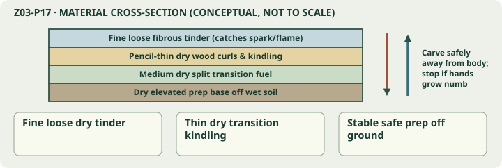

Z03-P17 · Fire and ignition · Adapted historical material
Prepare fine shavings, fibrous tinder and kindling bundles safely
Create high-surface-area dry starter materials that catch brief ignition heat and hand flame reliably to kindling.
When it applies · Staging tinder and kindling for an authorized outdoor fire; requires safe cutting habits if using a knife.
Equipment · Dry lawful tinder/wood, dry base surface, safe knife only if trained and extinguishing water nearby.

Actions
- Match tinder fineness to your ignition tool—sparks require very fine dry fibrous material or prepared shavings, whereas open matches and lighters can ignite thin dry twigs and dry wood curls.[C03, C10, C11]
- Keep cutting strokes controlled away from fingers, legs and companions when making dry wood shavings from sound deadwood; use a stable base rather than holding wood against your body.[C03, T01, ED]
- Bundle fine tinder loosely enough for oxygen circulation and stage pencil-thin dry kindling right beside it so flame transfers smoothly before tinder burns out.[C03, ED]
Failure recognition · Packing fine tinder tightly into a dense airless ball that smothers sparks, or carving hastily with cold numb hands and causing a laceration.[C03, E06, T01]
Verify · Confirm loose dry tinder, thin dry kindling and medium fuel are all staged on a dry surface before igniting.[C03, ED]
Stop or change course · If cold numb fingers impair knife control or dry tinder cannot be prepared safely, put the blade away and switch to commercial dry tinder or no-fire shelter.[E06, C03, C08]
Evidence and editorial notes
- C03 · USDA Forest Service / Smokey Bear · Smokey Bear’s Campfire Safety Guide (agency PDF)
- Section: Build your campfire > Tinder, kindling, fuel · Conditions: Outdoor authorized campfire
Support: Dry tinder, small kindling and larger fuel serve different roles. Gather materials before ignition. Avoid accelerants.
Limitations: Species availability and moisture content vary by season and local collection rules. · Conflicting evidence: None; separates material function from unverified species claims.
Editorial note: Used to stage three-tier fuel geometry without prescribing specific live trees. · Specialist reviewer: Fire prevention
Primary source · checked 2026-11-24 - C08 · NWS · What To Do If You're Caught in a Winter Storm (current web edition)
- Section: Outside > If there is no shelter nearby · Conditions: Stranded outdoors during a winter storm
Support: Seek shelter and block wind and wet exposure. Reduce heat loss from contact with snow or ground.
Limitations: Does not guarantee overnight survival without adequate insulation or rescue. · Conflicting evidence: None; reinforces no-fire exposure control priority.
Editorial note: Anchors no-fire fallback when ignition fails or is banned. · Specialist reviewer: Cold-weather shelter specialist
Primary source · checked 2026-11-24 - C10 · NPS · Flint and Steel at Pipe Spring National Monument (2015-02-24)
- Section: What > Firemaking with flint and steel · Conditions: Historical hard stone and suitable steel demonstration
Support: With traditional flint-and-steel, the flint removes small particles of steel that oxidize in air; a receptive tinder material catches the hot particles.
Limitations: Requires high-carbon steel and sharp hard rock (e.g., chert/flint); random unknown rocks fail and can fracture dangerously. · Conflicting evidence: Corrects common misconception that sparks come from the rock itself.
Editorial note: Used for mechanism diagrams and cold-inspection teaching cards. · Specialist reviewer: Fire prevention and materials mechanics
Primary source · checked 2026-11-24 - C11 · NPS · Ten Essentials (current web edition)
- Section: Fire and illumination · Conditions: Outdoor emergency kit
Support: Carry a dependable ignition option and protect it from moisture. Carry a separate light.
Limitations: Disposable butane lighters lose vapor pressure in freezing cold; matches fail when damp. · Conflicting evidence: None; supports redundant dry ignition kit planning.
Editorial note: Keeps lighting independent of fire-building. · Specialist reviewer: Field equipment and fire prevention
Primary source · checked 2026-11-24 - E06 · CDC · Preventing Hypothermia (current web edition)
- Section: Recognizing and treating hypothermia · Conditions: Cold wet exposure; signs such as confusion, slurred speech, fumbling or drowsiness
Support: Suspected hypothermia warrants prompt help and protection from further cooling. It can occur above freezing if wet or chilled.
Limitations: Early mild shivering can mask rapidly worsening judgment impairment. · Conflicting evidence: None; aligns with ARC and WMS guidance.
Editorial note: Anchors exposure-to-medical escalation thresholds. · Specialist reviewer: Wilderness medicine
Primary source · checked 2026-11-24 - T01 · American Red Cross · First Aid Steps (current web edition)
- Section: First Aid Steps > Check the scene; check the person · Conditions: Lay responder in United States; assess safety before contact
Support: Check scene safety, responsiveness, breathing and immediately life-threatening conditions.
Limitations: Lay guidance does not replace advanced clinical or rescue protocols. · Conflicting evidence: None; universal first-response opening gate.
Editorial note: Anchors scene-safety-first rule across Z01. · Specialist reviewer: EMS and wilderness medicine
Primary source · checked 2026-11-24
Source lineage · B012 P20 and Smokey Bear campfire guide; adapted historical material · Classification · Adapted historical material.